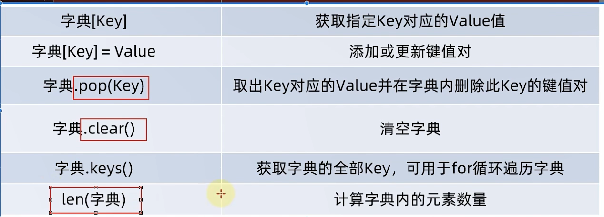

Python从入门到入土
字面量
注释
单行注释：
# 单行注释
多行注释：
"""
多行注释
"""
变量
格式：变量名 = 变量
money = 50
print("钱有:", money)
数据类型
可以通过type()查看数据的数据类型
查看的是:变量存储的数据的类型。因为,变量无类型,但是它存储的数据有。
变量有没有类型?
没有，字符串变量表示变量存储了字符串而不是表示变量就是字符串
数据类型转换
算数运算符
字符串
字符串格式化
精度控制
我们可以使用辅助符号"m.n"来控制数据的宽度和精度
- m,控制宽度，要求是数字（很少使用),设置的宽度小于数字自身,不生效
- .n,控制小数点精度,要求是数字,会进行小数的四舍五入
示例：
- %5d:表示将整数的宽度控制在5位,如数字11,被设置为5d,就会变成: [空格][空格][空格]11,用三个空格补足宽度。
- %5.2f:表示将宽度控制为5,将小数点精度设置为2
小数点和小数部分也算入宽度计算。如,对11.345设置了%7.2f后,结果是: [空格][空格]11.35。2个空格补足宽度,小数部分限制2位精度后,四舍五入为.35
快速写法
表达式格式化
数据输入
input语句（函数） 数据输出：print 数据输入： input
if语句基本格式
if age >= 18:
print("111")
elif:
print("11")
else:
print("1")
for语句
for 变量 in 被处理的数据
name = "123"
for x in name:
print(x)
"""
1
2
3
"""
range()
函数
容器
list
常用方法
list1 = [1, 2, 3]
# 往后面追加
list1.append(4)
# 往后面追加
list1.extend([5, 6, 7, 8])
# 删除
del list1[1]
# 取出并返回下标元素
data = list1.pop(1)
# 从前到后找到第一个元素并删除
list1.remove(7)
# 有几个这样的元素
cnt = list1.count(8)
# 清空
list1.clear()
# 长度
len(list1)
print(list1)
元组
元组同列表一样，都是可以封装多个、不同类型的元素在内。但最大的不同点在于：
元组一旦定义完成，就不可修改
字符串
大部分方法与java类似
比如：replace、split
序列-切片

切片操作不会影响序列本身，而是会得到一个新序列
set集合

dict(字典、映射)
key-value
